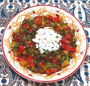

|
Mixed Peppers SalsaLebanon - Harrah | ||||
| Makes: Effort: Sched: DoAhead: |
1-1/2 cups *** 1-1/4 hrs Yes |
This delicious salsa is popular in Lebanese restaurants. It does have a couple chilis. but seeds and veins have been removed, as the Lebanese don't like much chili heat. Feel free to spice it up if you wish. | |||
|
|
9 1 1 4 20 1/2 1/3 1 ------- ar ar |
oz cl oz c c t --- |
Onion Chili, Red (1) Chili, Green (1) Garlic Bell Peppers (2) Cilantro (3) Olive Oil ExtV Salt -- Serve With Flat Bread Lemon Wedges |
Prep - (35 min)
|